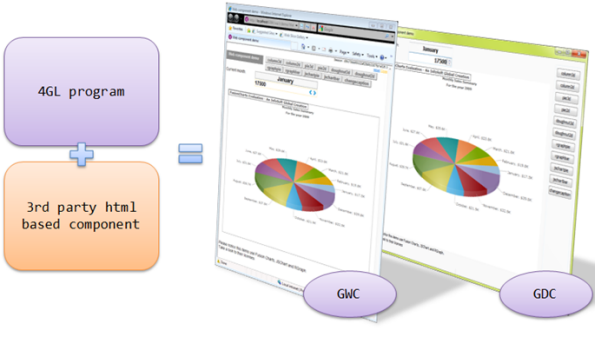
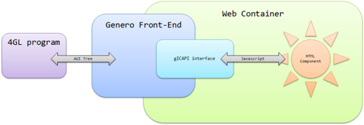
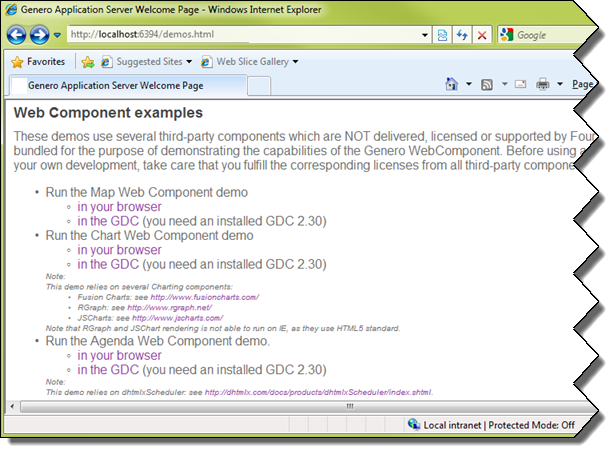

Summary:
See also: Forms
Starting with Genero 2.30, you can integrate third party graphical components into form files by using a new form item type called WEBCOMPONENT.
A WEBCOMPONENT field is an element defining an area in the form layout for instantiating an external component, based on html (javascript, ajax, flash...).
The components that can be found on the web are designed for a specific need, and usually have advanced and powerful features which can bring greatly added value to your applications. You can, for example, find chart/graph widgets, calendar widgets, drawing widgets, etc. Such specialized widgets are not part of the standard GUI toolkits used to implement Genero front-ends, so they need to be integrated as external components.
Here's a 4GL application using a 3rd party Flash-based chart component (http://www.fusionchart.com):

Note that some web components are free, and some are licensed, so you should take the cost into account before integrating a new web component into the forms of your application.
Genero Desktop Client uses WebKit. Webkit plugins are the same as Mozilla Firefox or Google Chrome plugins (not extensions), so if you need to use a given plugin (like Adobe Flash Player), you will need to install either the flash player plugin for Firefox or the stand alone player. Having only Microsoft Internet Explorer plugin is not enough as Webkit does not use Active X technology.
The following sections describe in detail the programming steps to create an application using a WEBCOMPONENT form item type:
Warning: Keep in mind that the interface script has to be deployed on the front-ends of your production sites. For deployment tips, refer to front-end specific documentation.
Web Components are implemented on the front-end side through an interface script. The goal of this interface is to manage communication between the 4GL program and the component.

The Web Component API relies on a published global object named gICAPI to:
The gICAPI provides the following methods:
| Object Methods | |
| Name | Description |
SetData( data STRING
)
|
Data to be sent to the program. |
SetFocus( )
|
Generates a focus change request. |
Action( action STRING
)
|
Triggers an action event. |
Identifies the data to be sent to the program. The corresponding form field value will be updated with data.
Data is transmitted as plain text; sending a large amount of data is not recommended.
The corresponding form field must be the current one. In 4GL, only the current field can be updated by the user.
Generates a focus change request. The focus is entirely managed by the runtime system. The focus request may fail:
If the focus change request succeeds, gICAPI.onFocus() will be called with
the
true parameter.
Generates an action event, which will trigger the corresponding ON ACTION code.
If the action named action is not available (not active or does not exist), this function
does nothing.
The following methods of the gICAPI object will be called by the Web Component Interface:
| Object Methods | |
| Name | Description |
onFocus( polarity BOOLEAN
)
|
Called when program sets focus in or out. |
onData( data STRING
)
|
Called when FormField value changes. |
onProperty( property STRING
)
|
Called when a property has been added/removed, or its value has changed. |
This function will be called when the focus changes; polarity is set to
true if the WebComponent gains the focus, false if the Component loses the focus.
This function will be called when the program value of the form field has been changed. The new value will be data.
This function will be called when one of the properties of the component has changed (been created/removed or value changed). The format used to pass properties is JSON. The complete property set is sent in the parameter each time this function is called.
The global function onICHostReady( version DECIMAL ) will be called by the front end when the WebComponent Interface is ready. The version passed in
the parameter allows you to check that your component is compatible with the API.
01<SCRIPT LANGUAGE="JavaScript">02// This function is called by the Genero Client Container03// so the web component can initialize itself and initialize04// the gICAPI handlers05onICHostReady = function(version) {06if ( version != 1.0 )07alert('Invalid API version');
At this point the API is ready; the gICAPI object is now created.
The next lines define the functions that must be called by the API to transmit data from the program to the component:
A focus border will be added when the component has the focus.0809// Initialize the focus handler called by the Genero Client10// Container when the DVM set/removes the focus to/from the11// component
A div section is used as the title. When the property "title" is changed from the program, the div is updated. The JSON string is evaluated using the12gICAPI.onFocus = function(polarity) {13if ( polarity ) {14document.body.style.border = '1px solid blue';15} else {16document.body.style.border = '1px solid grey';17}18}1920// Initialize the data handler ...21// This component does not care about the data set by the DVM ...22// so there is nothing to do.23gICAPI.onData = function(dt) {24}2526// Initialize the properties handler ...27// update the component when a property changes
eval built-in javascript function.
Now the following functions will be used to transmit the data or focus request to the program. These functions will be called by the component itself, and will use the gICAPI object.28gICAPI.onProperty = function(property) {29var myObject = eval('(' + property + ')');30document.getElementById("title").innerHTML = myObject.title;31}32}33
The component itself can now be loaded. In this example, the component is an image map. When one of the areas is clicked, the name of the area (in this case, a state of the USA) will be transmitted as the value (using3435// When the user clicks on the document we ask the DVM to36// get the focus37askFocus = function() {38gICAPI.SetFocus();39}4142// This function is called when the user clicks43// on an area of the map44execAction = function(stateName) {45gICAPI.SetData(stateName); // Set the widget value so DVM knows it46gICAPI.Action("state"); // Raise an action47}48</SCRIPT>49
gICAPI.SetData),
and an action indicating the user clicked on a state will be sent (using gICAPI.Action).
50<body onclick="askFocus()" style="border: 1px solid grey;margin: 0px;">51<center>52<H1 id="title">default title</H1>53<IMG SRC="USAMAP.gif" USEMAP="#USAMAP" WIDTH=598 HEIGHT=364 BORDER=0>54<MAP NAME="USAMAP">55<AREA SHAPE=POLY COORDS="230,35,294,38,299,57,299,79,228,79" onclick="execAction('North Dakota')" ALT = "North Dakota">56...57<AREA SHAPE=POLY COORDS="486,146,529,136,536,155,536,161,515,156,511,144" onclick="execAction('Maryland')" ALT = "Maryland">58</MAP>59</center>60</body>
In order to display and/or input data in a Web Component, you must define a form field with the WEBCOMPONENT item type.
Since Web Component usage is usually very specific, the data of such fields is often not stored "as is" in a database column; you generally define the Web Component field name with the FORMONLY table prefix.
The COMPONENTTYPE attribute is mandatory to define the type of Web Component to be loaded. This attribute specifies a name that will be mapped to an interface script on the front-end side.
In Genero Application Server configuration (see GAS documentation, GAS Configuration Reference, Execution Component), the entry WEB_COMPONENT defines the path where components are deployed:
01<WEB_APPLICATION_EXECUTION_COMPONENT Id="cpn.wa.execution.local">02<ENVIRONMENT_VARIABLE Id="FGLDIR">$(res.fgldir)</ENVIRONMENT_VARIABLE>03<ENVIRONMENT_VARIABLE Id="FGLGUI">$(res.fglgui)</ENVIRONMENT_VARIABLE>04<ENVIRONMENT_VARIABLE Id="PATH">$(res.path)</ENVIRONMENT_VARIABLE>05<ENVIRONMENT_VARIABLE Id="FGLLDPATH">$(res.fglldpath)</ENVIRONMENT_VARIABLE>06<ENVIRONMENT_VARIABLE Id="LD_LIBRARY_PATH">$(res.ldlibrarypath)</ENVIRONMENT_VARIABLE>07<DVM>$(res.dvm.wa)</DVM>08<WEB_COMPONENT>$(connector.uri)/components</WEB_COMPONENT>09</WEB_APPLICATION_EXECUTION_COMPONENT>
The component must be located in WEB_COMPONENT, in a directory named COMPONENTTYPE, and the main file must be named COMPONENTTYPE.html.
Example:
01WEBCOMPONENT wc = FORMONLY.mychart,02COMPONENTTYPE = "3DCharts";
The component and all related files should be located in $FGLASDIR/web/components/3DCharts and the main file should be $FGLASDIR/web/components/3DCharts/3DCharts.html.
Notes:
$GDCDIR/webcomponents and follows the same rule as above
(ex: $GDCDIR/webcomponents/3DChars/3DCharts.html)).
01 CALL ui.interface.frontCall("standard", "setwebcomponentpath", [myUrl],[ret])
The url must be a well formatted url (e.g. "http://myserver/components" or "file:///c:/components")
Web Components are usually complex widgets displaying detailed information on the screen, like charts, graphs, or calendars. Such widgets are generally resizable; you can use the STRETCH attribute to let the end-user control the resizing policy of a Web Component field.
Since Web Component field definitions are generic, you must use the PROPERTIES
attribute to set specific parameters of the widget. In the above example, the type of the Web Component is identified by
the name "3DCharts". The PROPERTIES attribute defines
the type of the chart (i.e. "bars"), and the X / Y axis labels.
The PROPERTIES attribute can define a list of:
name = value ),name = ( value1, value2, ...
) ) andname = ( sub-name1 = value1,
sub-name2 = value2, ... ) )where name is a simple identifier, and where values can be numeric or string literals.
Warning: The name of a property defined in the PROPERTIES attribute is converted to lowercase by the form compiler. To avoid mistakes, a good programming pattern is to define properties in lowercase, in both the interface script and the form definition file. Keep in mind that property names are not checked at compile time, so nonexistent or mistyped properties will be ignored at runtime.
Example:
01LAYOUT02GRID03{04[wc ]05[ ]06[ ]07[ ]08[ ]09}10END11END12ATTRIBUTES13WEBCOMPONENT wc = FORMONLY.mychart,14COMPONENTTYPE = "3DCharts",15STRETCH = BOTH,16PROPERTIES = ( type = "bars",17x_label = "Months",18y_label = "Sales" );19END
For more details about the syntax and possible attributes, see the Form Specification File page.
Once a Web Component field is defined in the form file, it can be used as a regular Edit field in program dialogs.
For example:
01DEFINE mychart STRING02DEFINE data_array DYNAMIC ARRAY OF RECORD ...03...04LET mychart = array_to_chart( data_array )05DISPLAY BY NAME mychart06...07INPUT BY NAME mychart08AFTER FIELD mychart09CALL deserialize( mychart, data_array )
The data format is completely specific to the component. You will have to serialize the data in the 4GL program, and de-serialize it in the onData function.
Depending on your needs, you can also use the PROPERTIES attribute to pass the data and use JSON to handle it in the onProperty function.Warning: Keep in mind that all data will be transmitted via the Abstract User Interface; transmitting a lot of data will not be efficient and is likely to slow down your application.
Running examples can be tried on the GAS home page ( usually http://localhost:6394/demos.html for a stand-alone installation ):
